Jurnal Eropa · Hari 8 dari 16
Sarapan pelan-pelan di tepi danau, lalu sepuluh kilometer ke desa yang fotonya sudah dilihat semua orang sebelum sampai. Yang menentukan hari ini bukan rutenya — tapi jam berapa kami berangkat.
Satu-satunya keputusan penting hari ini diambil semalam
Keputusan sebenarnya sudah diambil malam sebelumnya, waktu menentukan jam sarapan: pagi-pagi, dan jangan santai-santai amat. Bukan karena jaraknya jauh — Hallstatt cuma sepuluh kilometer dari penginapan — tapi karena desa itu punya jam buka dan jam tutup yang tidak tertulis di mana pun.
Sarapannya sendiri sederhana: kroisan, telur orak-arik, selai, kopi, jus. Yang membuat betah bukan makanannya, tapi jendelanya. Payung-payung teras masih terlipat rapat, rumputnya basah, dan di seberangnya dinding gunung berdiri penuh tanpa perlu dicari sudutnya.
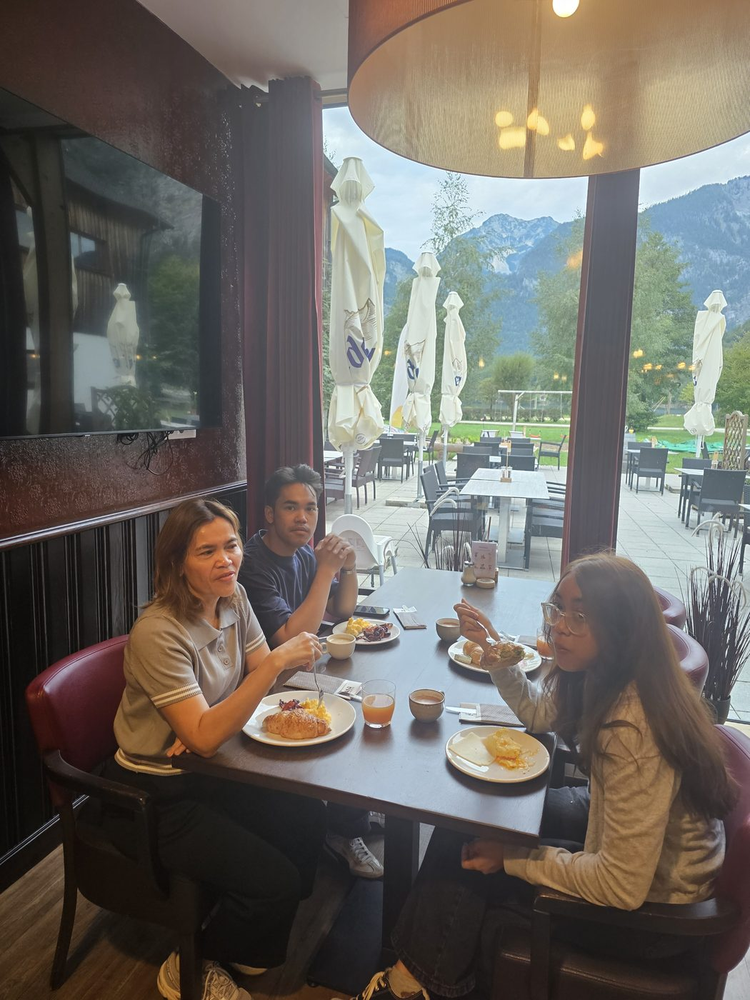
Obertraun ke Hallstatt, lewat ujung selatan Hallstättersee
Menginap di Obertraun dan bukan di Hallstatt itu keputusan yang sudah terbayar sejak pagi ini. Keduanya duduk di danau yang sama — Hallstättersee, sekitar 8,5 kilometer panjangnya, dalamnya sampai kira-kira 125 meter, dan permukaannya ada di sekitar 508 meter di atas laut. Obertraun di ujung tenggara, Hallstatt di sisi barat. Bedanya: yang satu desa biasa yang tenang, yang satu lagi masuk daftar wajib foto sedunia. Harga penginapan dan kepadatannya mengikuti perbedaan itu.
Keluar dari Obertraun, mobil lewat gerbang biru melengkung bertuliskan "Herzlich Willkommen — Bergbahnen Dachstein Krippenstein", pintu masuk ke stasiun bawah kereta gantung yang naik ke Krippenstein dan gua-gua es Dachstein. Jam segitu jalanannya masih kosong; satu mobil parkir di bahu jalan, sisanya sepi.
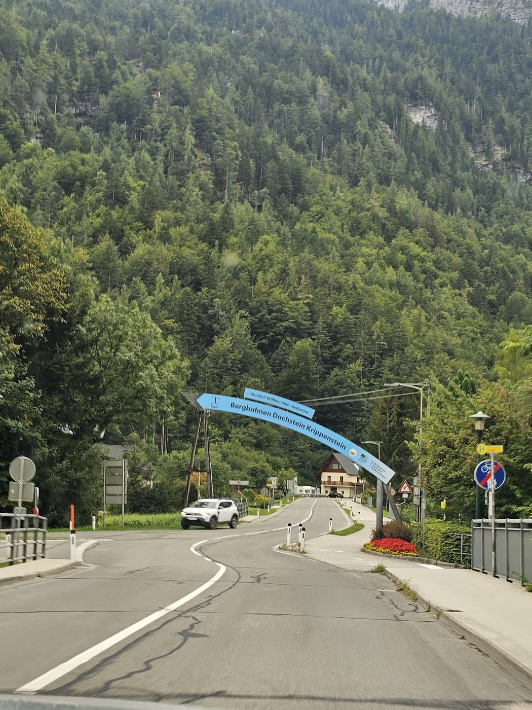
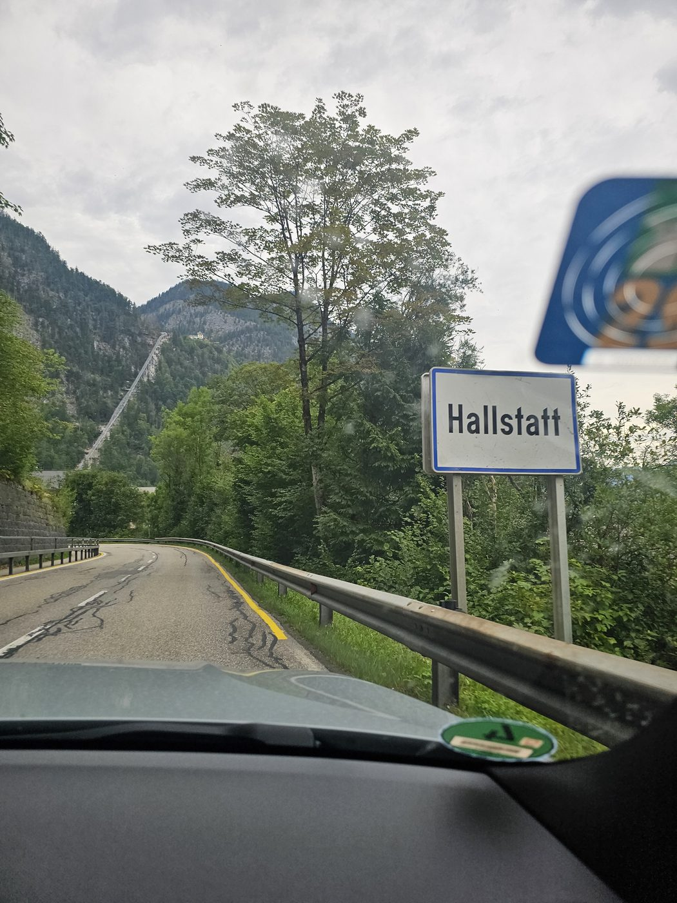
Kiri: gerbang Krippenstein di Obertraun. Kanan: empat menit kemudian, papan nama Hallstatt. Lihat garis putih miring di lereng gunung sebelah kiri — itu rel funikular ke tambang garam, dan nanti dia muncul lagi.
Satu hal kecil yang berguna buat yang menyetir sendiri: papan putih berbingkai biru berisi nama kota itu namanya Ortstafel, dan fungsinya bukan sekadar sambutan. Begitu melewatinya, kamu resmi masuk kawasan permukiman dan batas kecepatan otomatis turun jadi 50 km/jam — tanpa perlu ada rambu angka terpisah. Batasnya baru lepas setelah papan yang sama muncul lagi dengan garis coret merah. Banyak turis kena tilang di titik ini justru karena menunggu rambu angka yang memang tidak akan datang.
Angka-angka yang menjelaskan kenapa desa ini bisa penuh sesak
Hallstatt itu desa berpenduduk sekitar 750 orang. Angka kunjungannya sering disebut mendekati satu juta orang per tahun, sebagian besar datang dan pergi pada hari yang sama, dan hampir semuanya menumpuk di jendela waktu yang sama: kira-kira jam sepuluh sampai jam empat sore, waktu bus-bus rombongan dan tur harian dari Salzburg serta Wina tiba bersamaan.
Kalau perbandingan itu terasa mengada-ada, ingat bentuk desanya: Hallstatt terjepit di antara dinding gunung dan air, jadi lebarnya cuma beberapa deret rumah. Tidak ada jalan alternatif, tidak ada alun-alun besar untuk menyebar. Semua orang lewat gang yang sama.
Tekanannya sudah lama jadi masalah nyata buat warga, bukan sekadar keluhan wisatawan. Pada 2023 warga sempat berdemo menuntut pembatasan, dan pengelola desa sempat memasang pagar kayu di salah satu titik swafoto paling ramai untuk menghalangi pemotretan — dipasang, ramai diberitakan, lalu dicopot lagi. Sejak itu jumlah bus wisata yang boleh masuk per hari mulai dibatasi dan diatur jadwalnya.
Praktisnya buat yang bawa mobil: kendaraan tidak bisa masuk ke jantung desa. Yang tersedia adalah lahan parkir berbayar di sisi luar, sebagian besar di ujung selatan, di bagian desa bernama Lahn — lalu sisanya jalan kaki. Tarifnya dihitung per jam lewat mesin, dan angkanya berubah dari musim ke musim, jadi lebih aman dibaca langsung di mesinnya daripada percaya angka di blog mana pun. Yang tidak berubah adalah polanya: menjelang tengah hari di musim panas, lahan parkirnya penuh, dan antre masuk sambil melihat mobil di depan diputar balik adalah cara paling buruk memulai kunjungan.
Kami sampai sebelum jam sembilan. Masih kebagian tempat, masih bisa memilih, masih bisa keluar dari mobil tanpa langsung berdesakan.
Bagian yang tidak pernah masuk foto ikonik
Yang pertama menyambut bukan pemandangan danau, tapi rumah-rumah biasa tempat orang benar-benar tinggal. Satu di antaranya berhenti kami lihat lama: rumah bergaya Salzkammergut klasik — kayu gelap di bagian atap pelana, plester putih di bawahnya, daun jendela cokelat — dengan balkon selebar rumah yang tertutup penuh bunga ungu, ditambah geranium merah di dua ujungnya. Di samping pintunya ada lentera besi tempa dan nomor rumah 121.
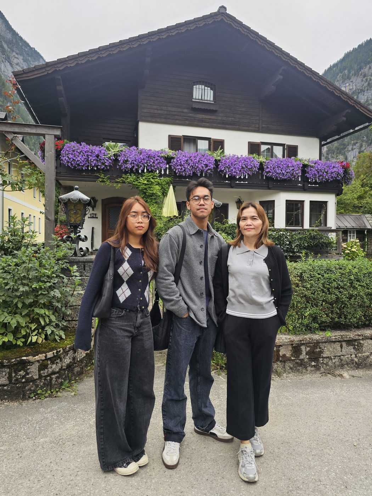
Beberapa langkah dari situ, di bawah kanopi kayu sebuah rumah lain, tergantung kotak petunia merah muda yang tumbuh sampai menjuntai hampir setengah meter. Di balok atapnya ada hiasan ikan dari logam — pengingat kecil bahwa sebelum jadi tujuan wisata, danau ini pertama-tama adalah tempat orang mencari ikan.
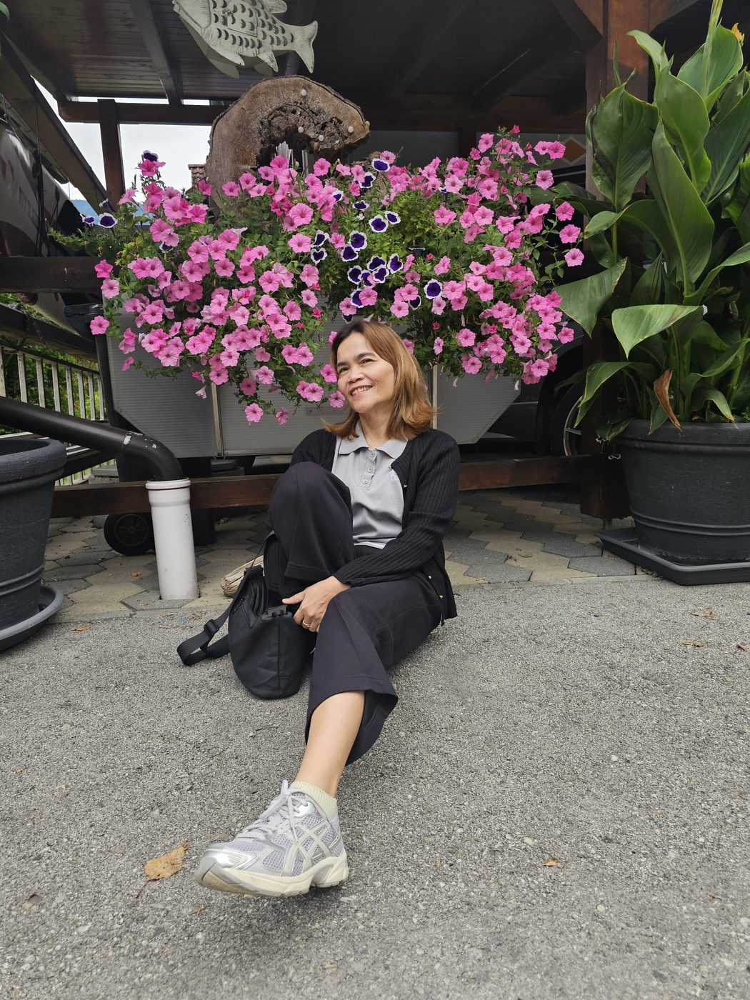
Jembatan kayu, rumput basah, dan air yang tembus pandang
Dari gang rumah-rumah itu jalan menurun ke tepi air, menyeberangi jembatan kayu kecil di atas anak sungai yang bermuara ke danau. Di sebelahnya ada taman bermain anak dengan perosotan kuning dan kubah panjat hijau — kosong sama sekali jam segitu.
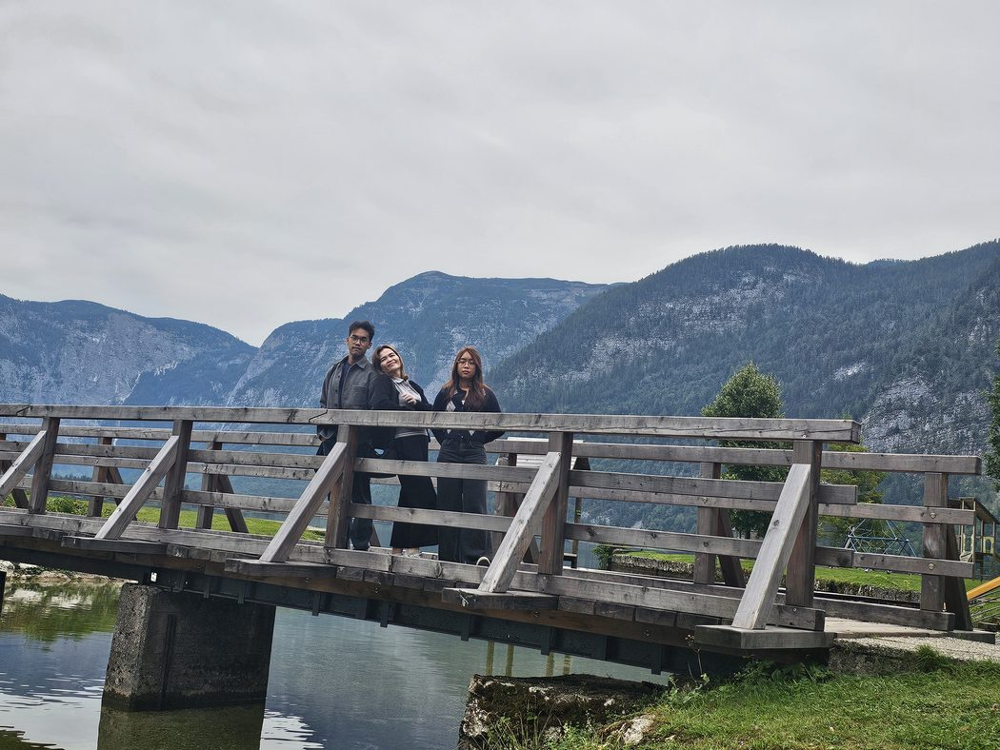
Paginya mendung — tidak ada matahari, tidak ada langit biru. Dan justru karena itu permukaan danaunya jadi seperti kaca: tanpa angin, tanpa riak, tanpa perahu. Seluruh dinding gunung terpantul utuh di air, dan garis batas antara yang nyata dan yang pantulan jadi sulit ditentukan.
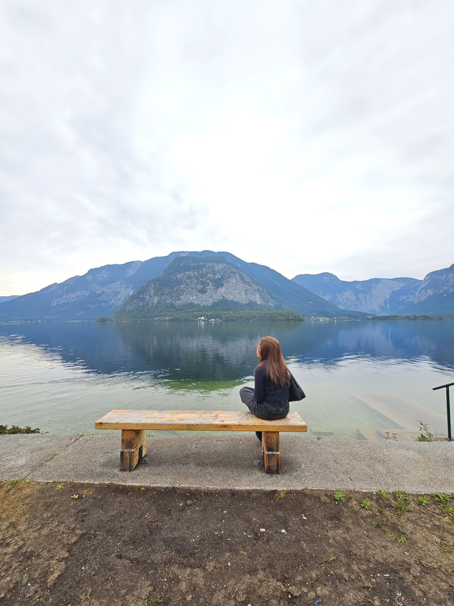
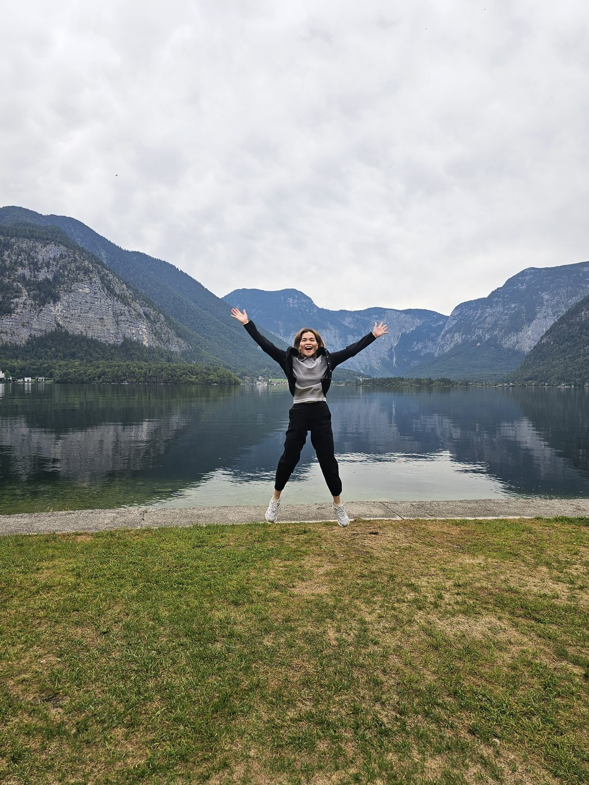
Bangku kosong menghadap air, dan rumput yang boleh diinjak. Dua hal yang di jam sebelas nanti sudah tidak tersedia.
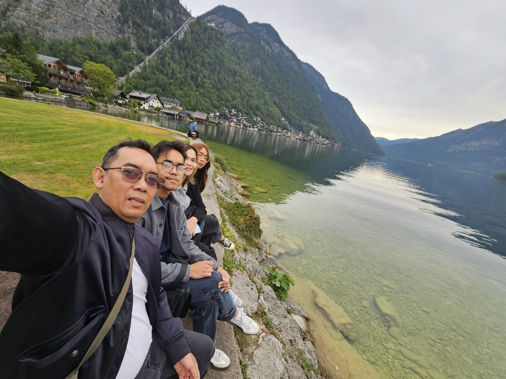
Dari sisi selatan ini, seluruh desa terlihat sebagai satu garis rumah tipis yang menempel di antara air dan tebing, dengan menara gereja mencuat di tengahnya. Danaunya membentang ke utara sampai hilang di balik lipatan gunung. Ini sudut yang tidak dijual di kartu pos mana pun, dan justru terasa lebih jujur soal betapa sempitnya tempat desa ini berdiri.
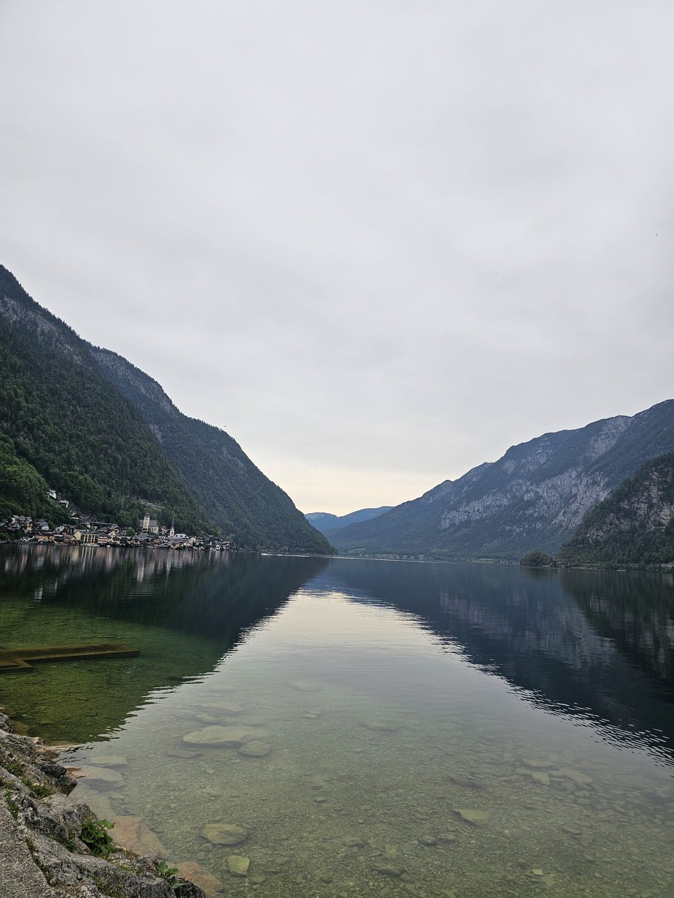
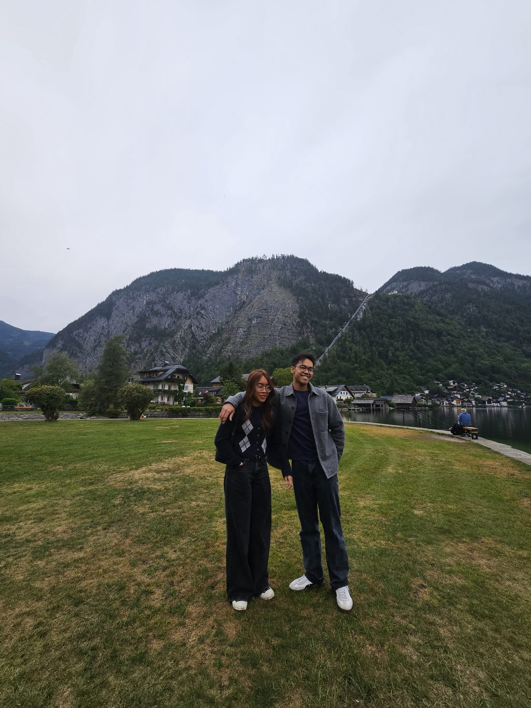
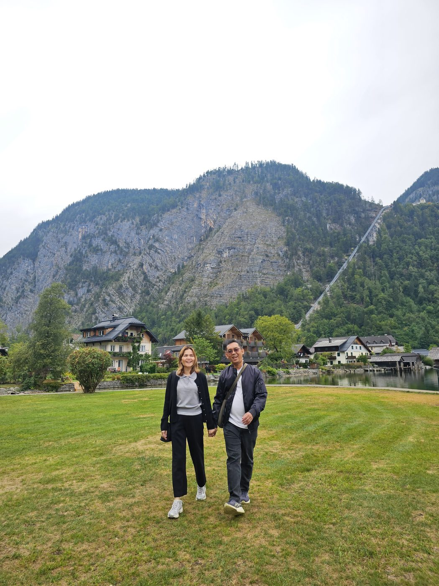
Rumputnya luas, dan pagi itu isinya cuma kami. Latar yang sama, di jam ramai, harus diantre bergantian.
Di satu titik, tangga beton berpagar besi hijau turun langsung masuk ke air — akses berenang, karena danau ini memang dipakai berenang di musim panas dan airnya termasuk yang paling bening di kawasan Salzkammergut. Duduk di anak tangganya, dasar danau kelihatan seperti tidak ada airnya sama sekali.
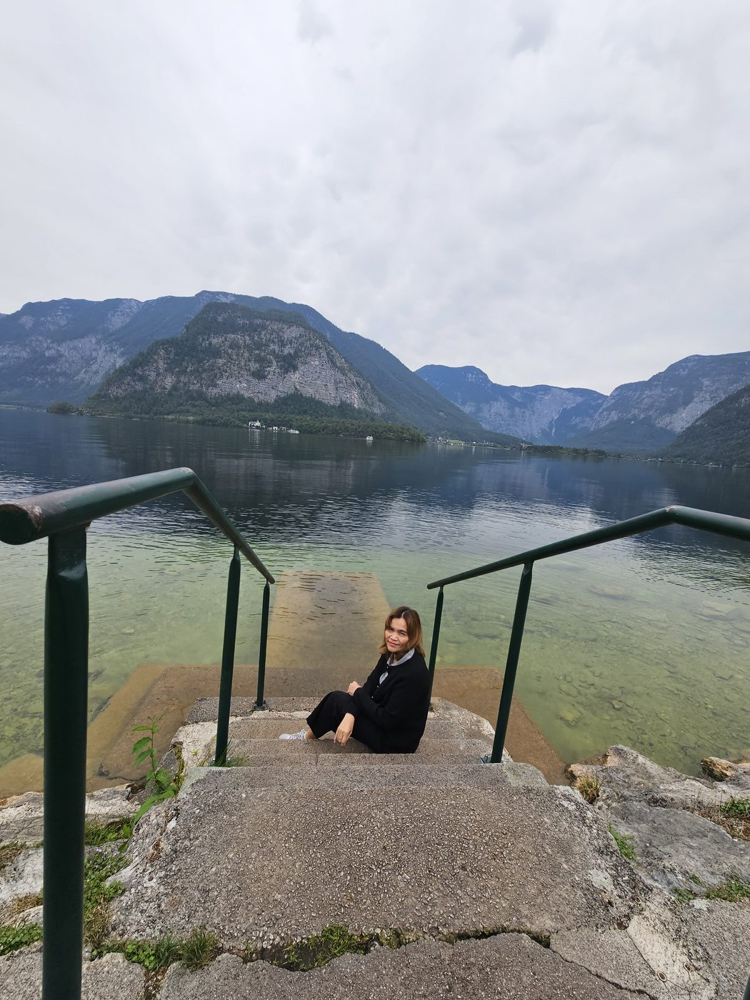
Penghuni tetap kawasan ini ternyata sekelompok bebek yang sama sekali tidak terkesan dengan kedatangan kami. Mereka berjemur di lempeng-lempeng beton di tepi air, tidak bergerak walau didekati, jelas sudah terbiasa dengan manusia yang berjongkok memotret.
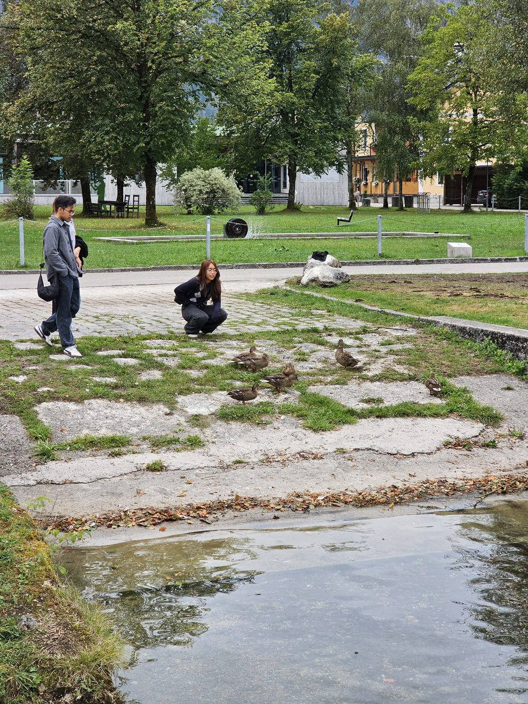
Yang bikin Hallstatt ada duluan, jauh sebelum turis
Balik ke mobil lewat gang kecil di antara rumah-rumah: satu sisi rumah plester putih tua, satu sisi bangunan kayu baru, keduanya sama-sama berbalkon bunga. Yang lewat cuma dua orang. Di ujung gang, di lereng gunung, kelihatan jelas satu garis lurus menanjak membelah hutan.
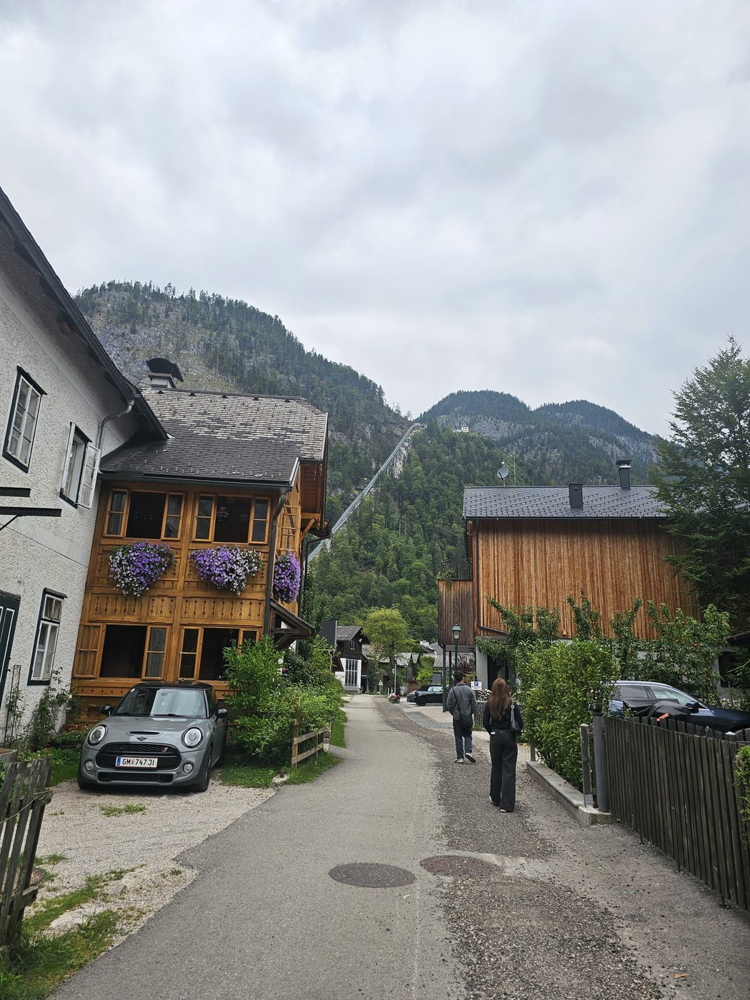
Garis itu penjelasan singkat kenapa desa ini ada. Bukan pariwisata — garam. Di lembah tinggi di atas sana ada tambang garam yang disebut sebagai tambang garam tertua di dunia yang masih beroperasi, dengan jejak penambangan mundur sampai ribuan tahun. Nama tempat ini sendiri sudah mengumumkannya: Hall dalam nama-nama daerah berbahasa Jerman berakar pada kata kuno untuk garam — sama seperti Hallein, Bad Reichenhall, dan tetangga besarnya, Salzburg, "kota garam".
Dari kuburan prasejarah di lembah atas itu digali lebih dari seribu makam pada abad ke-19, dan temuannya begitu khas sampai seluruh zaman besi awal Eropa — kira-kira 800 sampai 450 sebelum Masehi — dinamai menurut desa ini: Kebudayaan Hallstatt. Untuk itu juga, kawasan Hallstatt–Dachstein/Salzkammergut masuk Daftar Warisan Dunia UNESCO sejak 1997, bukan karena cantiknya, tapi karena lanskap budaya yang dibentuk perdagangan garam selama ribuan tahun.
Dua hal lain yang sering disebut orang tentang desa ini, dan dua-duanya benar: ada rumah tulang (Beinhaus) di kapel di samping gereja Katolik, berisi lebih dari seribu tengkorak — ratusan di antaranya dilukisi nama, tanggal, dan karangan bunga, karena tanah pemakaman di lereng sesempit ini tidak pernah cukup dan tulang harus dipindahkan setelah beberapa dekade. Dan ada replika seluruh desa ini di Tiongkok, dibangun sebuah pengembang properti di Provinsi Guangdong dan dibuka pada 2012 — lengkap dengan alun-alun dan menara gerejanya.
Di gang yang sama, di bawah atap kayu sebuah rumah, tersusun rapi tumpukan kayu bakar setinggi dada — belahan kayu yang disusun sampai rapat betul, sisi potongnya menghadap keluar semua. Ini akhir Agustus, dan orang di sini sudah menyiapkan musim dingin. Detail sekecil itu mengingatkan bahwa di balik semua etalase, ini tetap kampung di kaki gunung yang bulan Januari-nya tidak main-main.
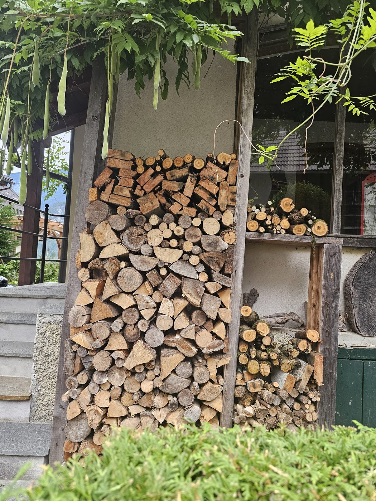
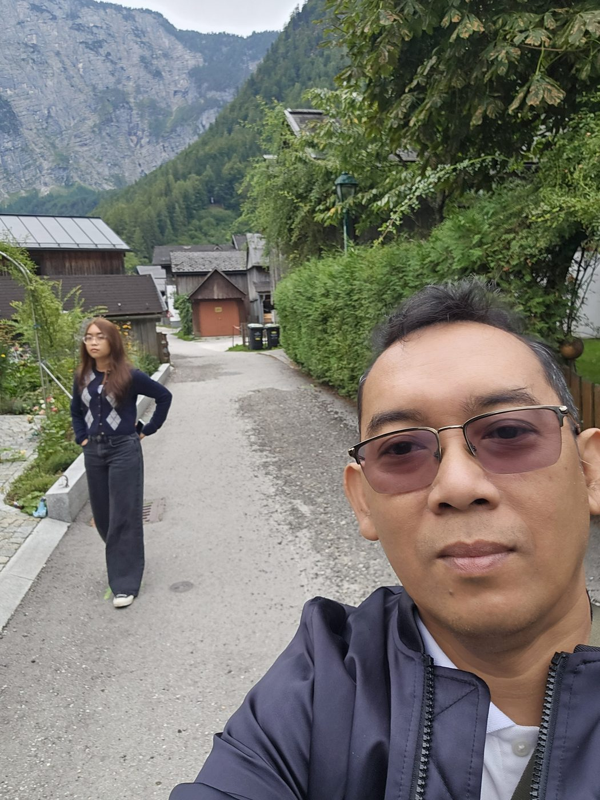
Kiri: persiapan musim dingin, disusun seperti pekerjaan tukang batu. Kanan: jam sepuluh kurang sepuluh, jalanan masih selega ini — dan ini hari kerja di puncak musim panas.
Jam setengah sebelas, dan bedanya langsung terasa
Setelah puas di Lahn, kami pindah ke bagian yang selama ini semua orang lihat di internet: sisi desa tempat seluruh rumah berbaris rapi di tepi air, dengan dua menara gereja muncul bersamaan — satu menara batu di lereng atas, milik gereja Katolik yang halamannya menampung rumah tulang tadi, dan satu menara ramping runcing persis di tepi danau, milik gereja Protestan.
Waktu di jam tangan: 10.30. Dan perbedaannya langsung terasa. Masih jauh dari sesak, tapi mulai ada orang lain di setiap frame — pasangan yang berfoto bergantian, keluarga dengan kereta bayi, beberapa orang menunggu kapal. Persis seperti yang diperkirakan: jendela sepinya baru saja tertutup.
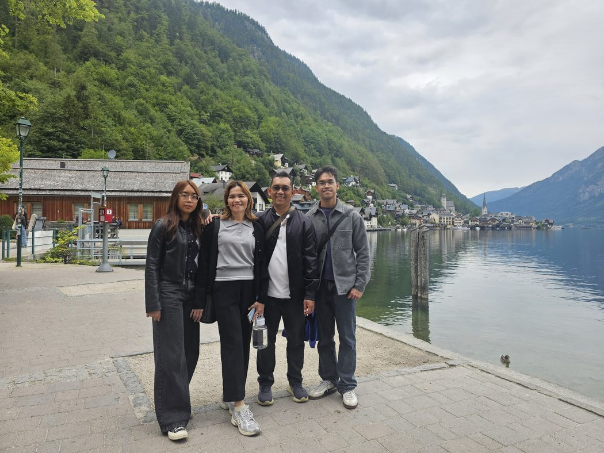
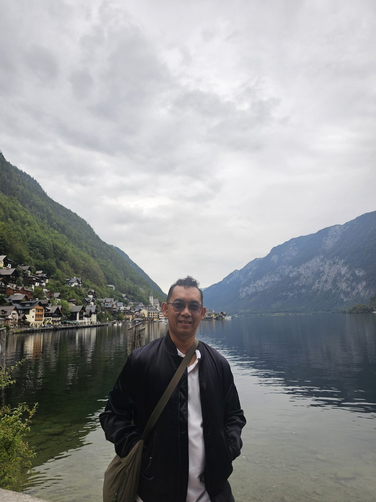
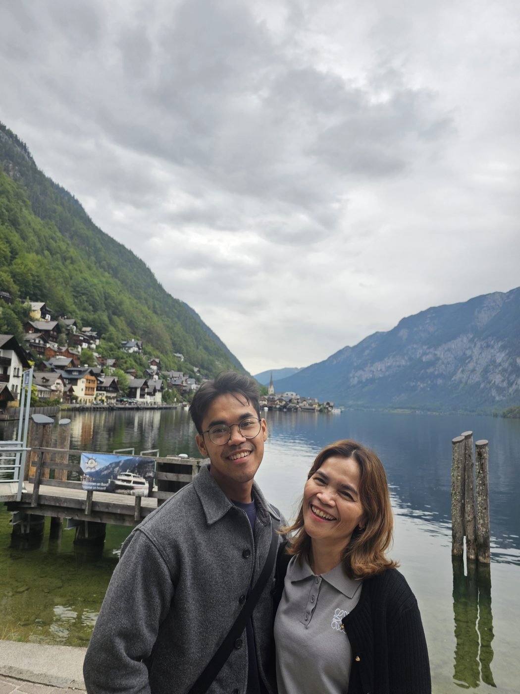
Tiang-tiang kayu di air itu tambatan perahu tua. Dari sini desanya terbaca sebagai satu garis panjang, bukan gumpalan.
Papan-papan kecil yang ternyata bercerita banyak
Masuk ke jalan tokonya, temanya cuma satu: garam. Ada gerai berspanduk oranye besar bertuliskan Salt Store, dengan poster Bad Ischler Natursalz — fein & unjodiert, halus dan tanpa yodium — plus stiker bundar "Buy the Original here!" dan papan panah kuning yang menegaskan The Original Hallstatt Salt Store. Dua kali kata "original" di satu muka toko biasanya berarti satu hal: ada banyak yang mengaku.
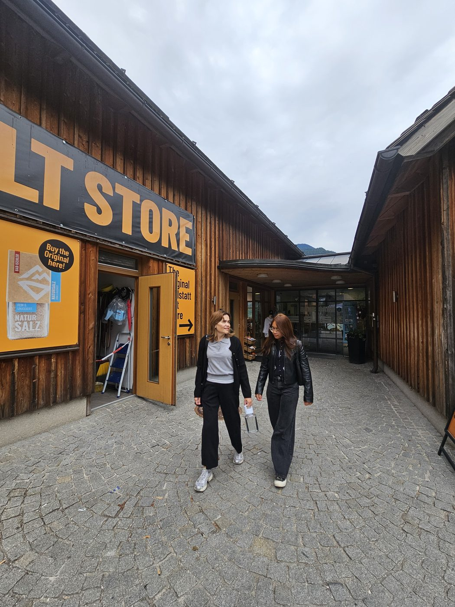
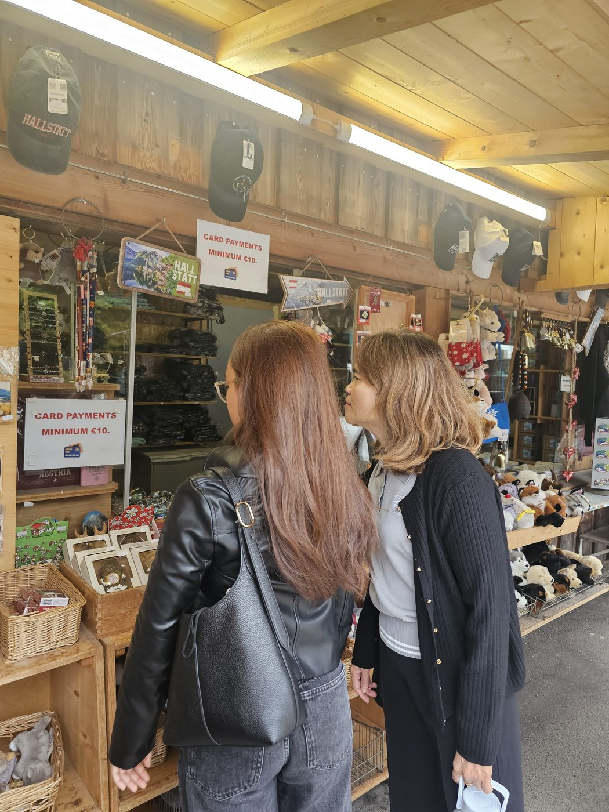
Kanan: topi bertuliskan HALLSTATT, magnet, boneka marmot. Perhatikan papan kecilnya — card payments minimum €10. Bawa uang tunai receh kalau cuma mau beli satu magnet.
Beberapa langkah dari situ, toko lain dengan papan lengkung besi bertuliskan Hallstätter Bergsalz — garam gunung Hallstatt. Yang menarik justru dua papan hitam vertikal yang mengapit pintunya: tulisannya huruf Jepang, ハルシュタットの岩塩, yang artinya persis sama — garam batu Hallstatt. Satu papan itu memberi tahu siapa pembeli terbesar di sini selama beberapa dekade terakhir, tanpa perlu statistik.
Dan menempel di kaca pintunya, satu papan kecil lagi: NO PHOTOS, NO VIDEOS. Di desa yang seluruh ekonominya berdiri di atas orang yang datang untuk memotret, ada toko yang harus memasang larangan memotret di pintunya sendiri. Itu ringkasan paling padat soal hubungan Hallstatt dengan kameranya.
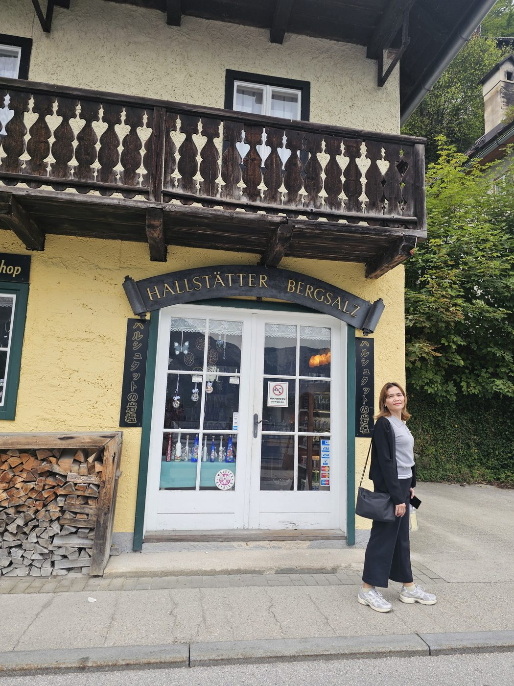
Papan kecil di dinding yang paling berkesan sepanjang pagi
Di sebuah dinding plester di tepi jalan ada relief batu: tiga sosok perempuan membungkuk, memanggul sesuatu yang berat di punggung. Di bawahnya papan kuning kecil berjudul "Hallstätter Kerntragerweiber". Isinya kira-kira begini:
Sampai akhir abad ke-19, kesulitan ekonomi memaksa banyak perempuan Hallstatt melakukan kerja fisik berat. Mereka memikul Kernsalz dengan Kraxen — keranjang gendong di punggung — turun dari Salzberg ke lembah, satu sampai dua kali setiap hari. Para Kerntragerweiber hari ini masih dikenang lewat "Kernbank", sebuah bangku istirahat di Dr.-Morton-Weg, jalan yang bermula tepat di titik ini.
Berdiri di situ, angkanya baru terasa: naik-turun gunung itu, memanggul garam, setiap hari, satu sampai dua kali. Jalur yang tadi pagi kami lihat sebagai garis putih rapi di lereng — yang sekarang dinaiki funikular dalam beberapa menit — dulu ditempuh dengan kaki dan punggung. Dan bangku istirahat itu dibuat karena memang dibutuhkan, bukan untuk pemandangan.
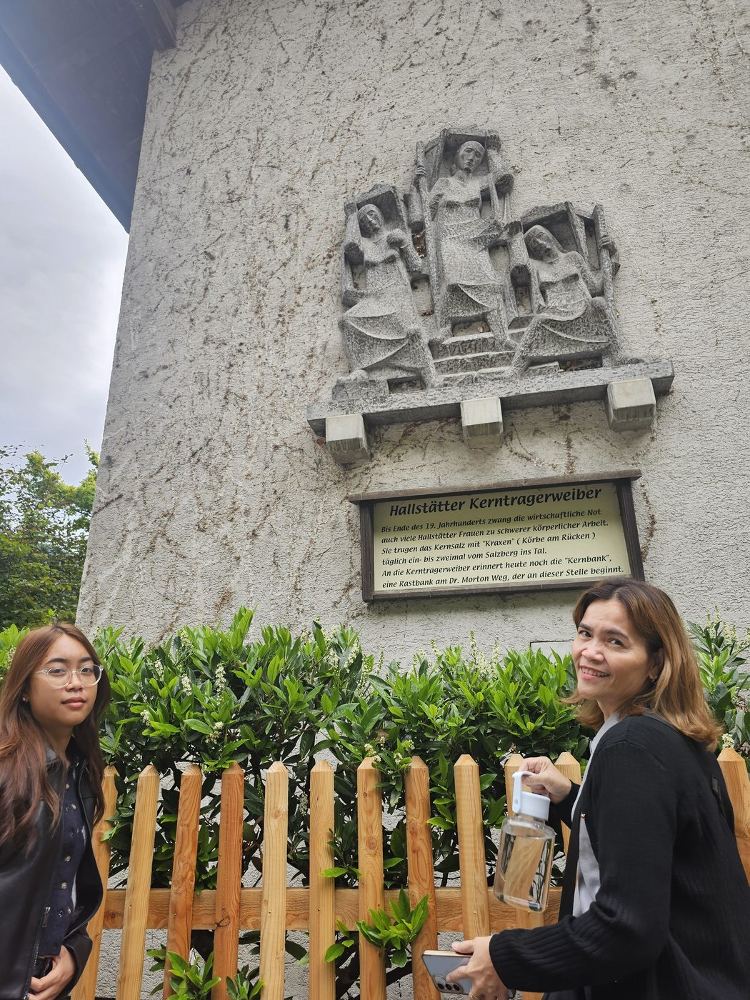
Mawar merambat, pohon yang ditempelkan ke dinding, dan satu permintaan sopan
Naik sedikit dari jalan utama, tokonya habis dan berganti rumah orang lagi. Satu rumah berplester merah muda bernomor 152 tertutup mawar merambat sampai ke lantai dua. Di rumah lain, sebatang pohon buah dilatih tumbuh rata menempel di dinding, cabangnya direntangkan mendatar seperti kandelabra — teknik kebun tua (espalier) yang dipakai di iklim dingin supaya buah menyerap panas yang dipantulkan tembok, dan supaya pohon tidak makan tempat di halaman sesempit ini.
Yang tergantung di pagar depannya: papan bundar kecil bertuliskan "Quiet Please". Bukan pagar, bukan larangan, bukan portal — cuma permintaan. Rasanya itu cara yang jauh lebih sabar daripada yang pantas mereka pakai.
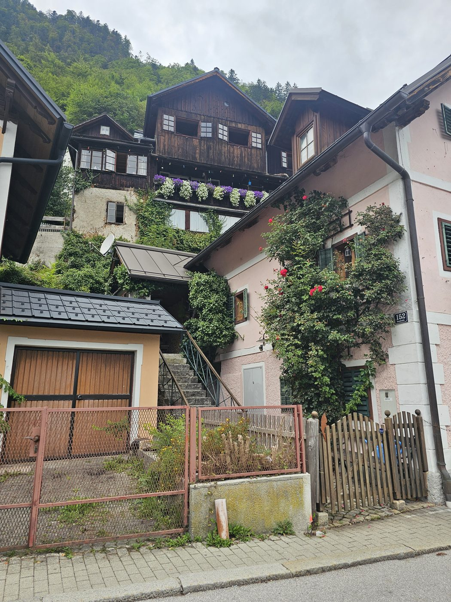
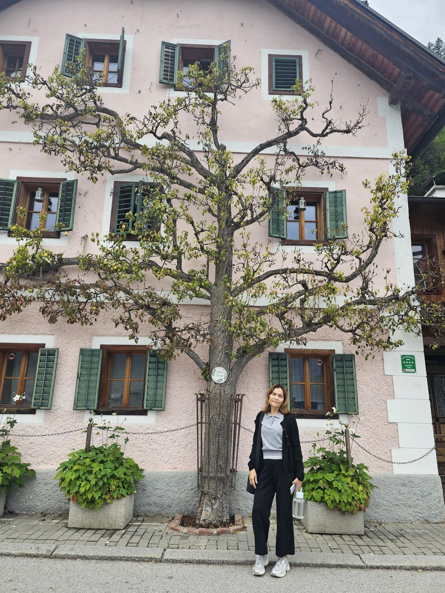
Kanan: pohonnya bukan tumbuh sendiri seperti itu — cabangnya diikat dan dilatih bertahun-tahun supaya rata di tembok. Papan bundar kecil di pagar bertuliskan "Quiet Please".
Menjelang jam sebelas, jalannya mulai isi
Turun lagi ke promenade tepi danau, dan di sini perubahannya paling kentara: dua jam lalu bangku kosong semua, sekarang sudah ada belasan orang berjalan berlawanan arah. Masih nyaman, masih bisa berhenti tanpa menghalangi siapa pun — tapi jelas bukan desa yang sama dengan yang kami masuki jam sembilan.
Satu tiang lampu di tepi jalan tertutup penuh stiker dari bawah sampai setinggi kepala, ditempel pengunjung dari mana-mana. Di antaranya ada stiker kerang kuning — lambang jalur ziarah Santiago, yang cabang-cabangnya memang membentang sampai ke pegunungan Austria. Di dinding rumah di seberangnya, papan Cash / ATM / EUR menyala; mesin tarik tunai untuk turis, di desa berpenduduk tujuh ratusan orang.
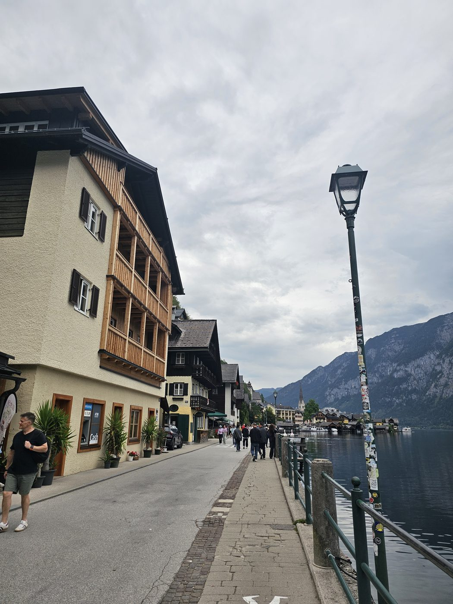
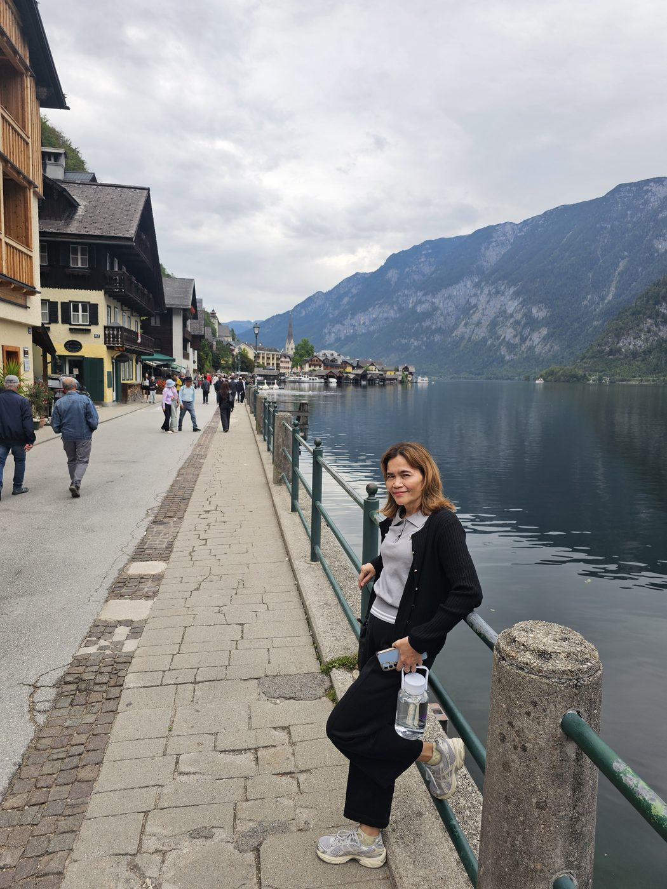
Kiri: tiang lampu yang jadi papan stiker bersama. Kanan: pagar besi hijau sepanjang promenade — pembatas paling difoto di desa ini.
Penutup paginya datang sendiri, tanpa diminta: angsa. Beberapa ekor angsa putih berenang mendekat ke tembok promenade, jelas hafal betul bahwa manusia yang berhenti di pagar sering membawa sesuatu. Airnya cukup tenang sampai setiap kayuhan kaki meninggalkan lingkaran riak yang rapi sekali di permukaan.
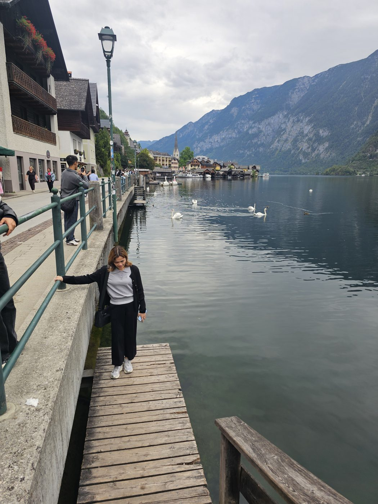
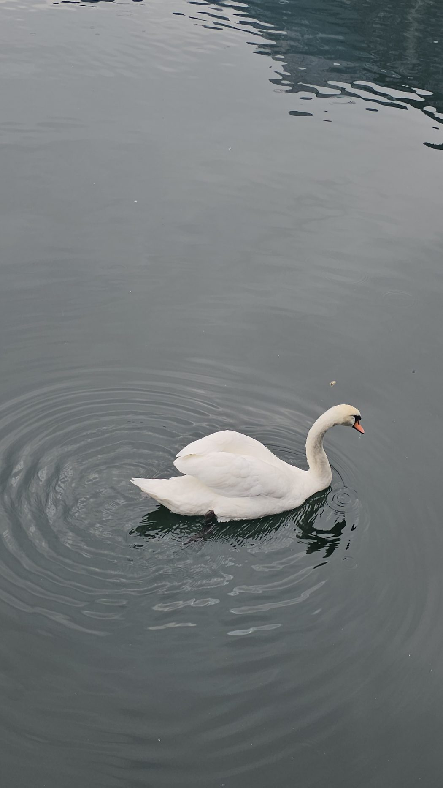
Jam sebelas lewat, dan langitnya makin gelap
Langit yang dari tadi kelabu makin turun, jadi urusan berikutnya diselesaikan di dalam ruangan. Pintu pertama yang dimasuki: sebuah toko sabun buatan tangan. Dari luar tampak seperti toko oleh-oleh biasa; di dalam ternyata dirancang sungguh-sungguh — jam dinding antik raksasa berangka Romawi, deretan tanduk rusa di dinding, lampu gantung kristal, dan sabun ditumpuk di ember seng dan toples kaca seperti permen.
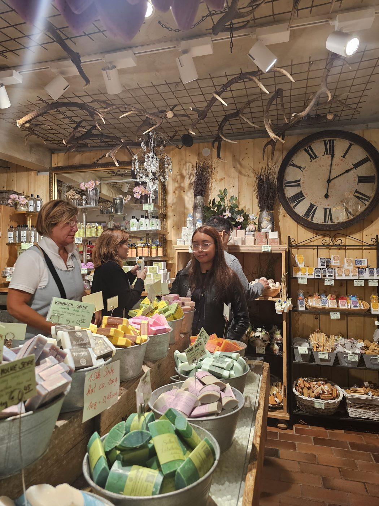
Yang bikin betah justru label-labelnya: ditulis tangan, dua bahasa, dan masing-masing menyebutkan gunanya. Zitronen Seife — sabun lemon, untuk kulit berminyak. Rosen Seife — sabun mawar, untuk kulit kering dan sensitif. Rosmarin, Eukalyptus, Orangen, semuanya diberi tanda VEGAN. Harganya seragam dan mengejutkan: €1,90 per batang. Untuk barang buatan tangan di desa yang seluruh ekonominya wisata, itu jauh lebih waras dari dugaan.
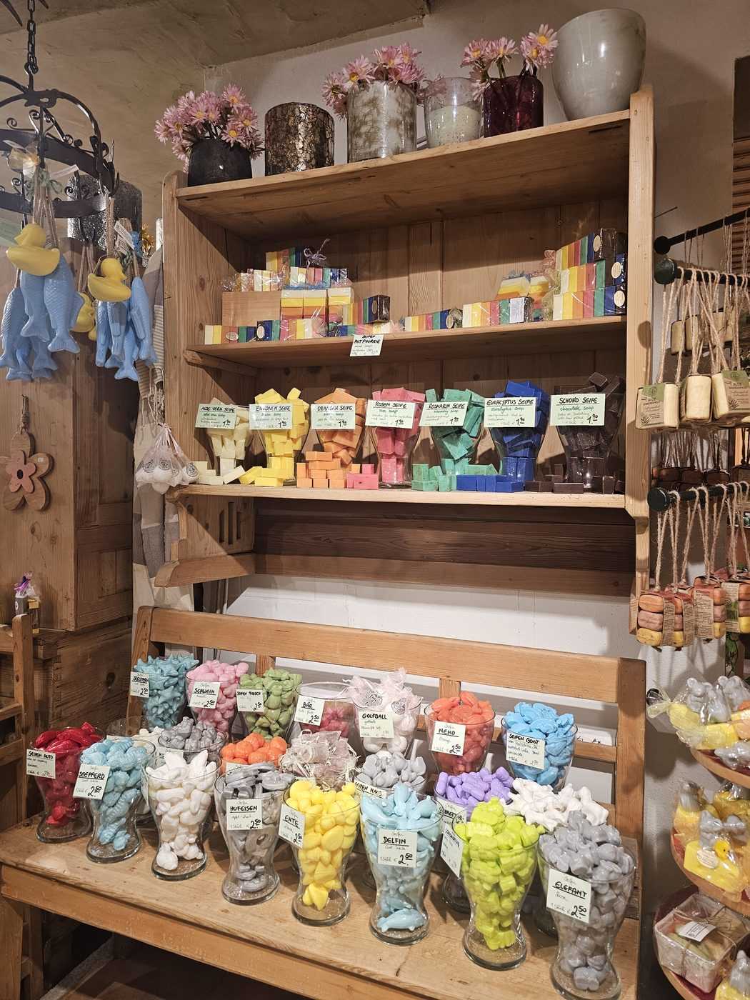
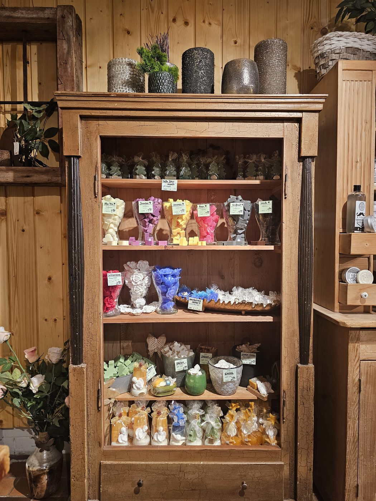
Kiri: sabun batangan €1,90, plus toples sabun berbentuk gajah, lumba-lumba, bebek, kuda laut — €2,50 sekantong. Kanan: lemari tua yang isinya sabun sekecil permen, €1,50-an.
Bagian yang paling banyak diminati adalah sabun berbentuk hati di keranjang rotan: aprikot (Marillen), rosehip (Hagebutten), verbena (Eisenkraut), aloe vera, dan minyak mawar — €3 per buah, atau €4 kalau mau yang sudah dibungkus rapi sebagai kado. Aprikot muncul berkali-kali di sini, dan itu bukan kebetulan: Marille adalah buah kebanggaan Austria, dan hampir semua yang bisa dibuat dari aprikot memang dibuat.
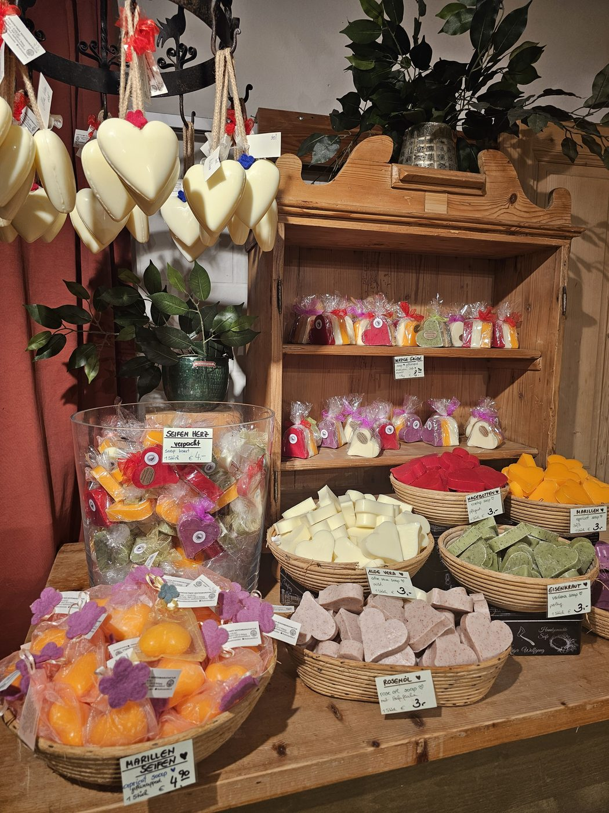
Sejak 1928, dan sekarang dijual per toples
Toko berikutnya menutup lingkaran seluruh cerita pagi ini. Di dinding batunya terpasang papan hitam-emas: SALZKONTOR — 1928 — Natursalz aus dem Salzkammergut, dengan tiga nama kota di bawahnya: St. Wolfgang, Hallstatt, Salzburg. Isinya rak demi rak toples garam, dari yang halus sampai butiran kasar merah muda, plus garam berbumbu dalam tabung kecil.
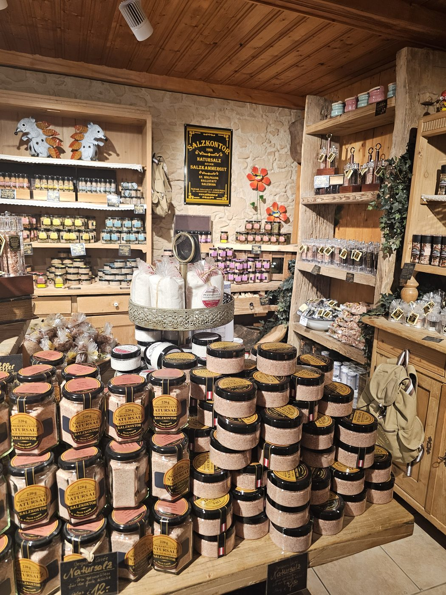
Dan di sinilah angkanya menohok. Satu toples Bergkern Cuvée Natursalz isi 220 gram dihargai €12 di papan tulis kecilnya. Itu berarti sekitar €55 per kilogram — untuk garam. Barang yang dulu dipanggul turun gunung oleh perempuan Hallstatt karena keluarganya butuh makan, hari ini dijual dalam toples kaca berlabel emas sebagai barang gourmet.
Di meja sebelahnya, set gilingan garam dan lada dalam dudukan kayu, lengkap dengan slogan "Würze des Lebens" — bumbu kehidupan. Harganya €68 satu set. Tidak ada yang salah dengan itu; cuma kalau kamu baru saja berdiri di depan papan Kerntragerweiber sepuluh menit sebelumnya, jaraknya terasa lucu sekaligus getir.
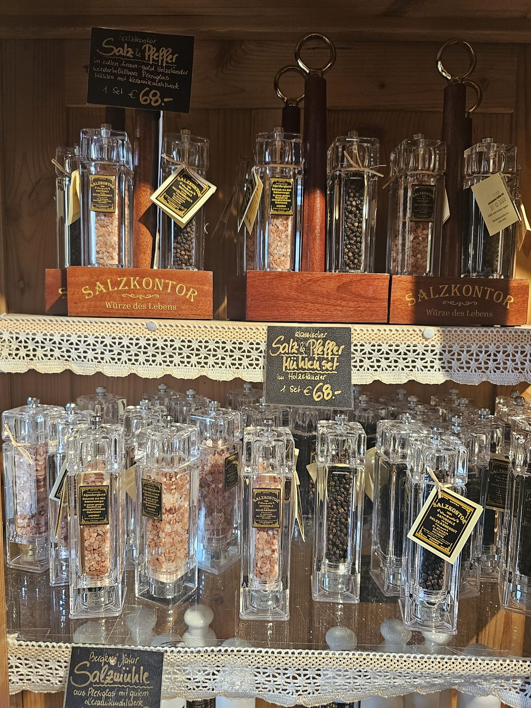
Empat papan kecil di satu tumpukan kayu bakar
Keluar toko, gerimis mulai turun dan payung dibuka. Danaunya berubah lagi: gunung di seberang tertutup kabut tipis, mataharinya cuma noda terang di balik awan, dan seekor angsa berenang sendirian meninggalkan garis panjang di air yang mulai dititiki hujan.
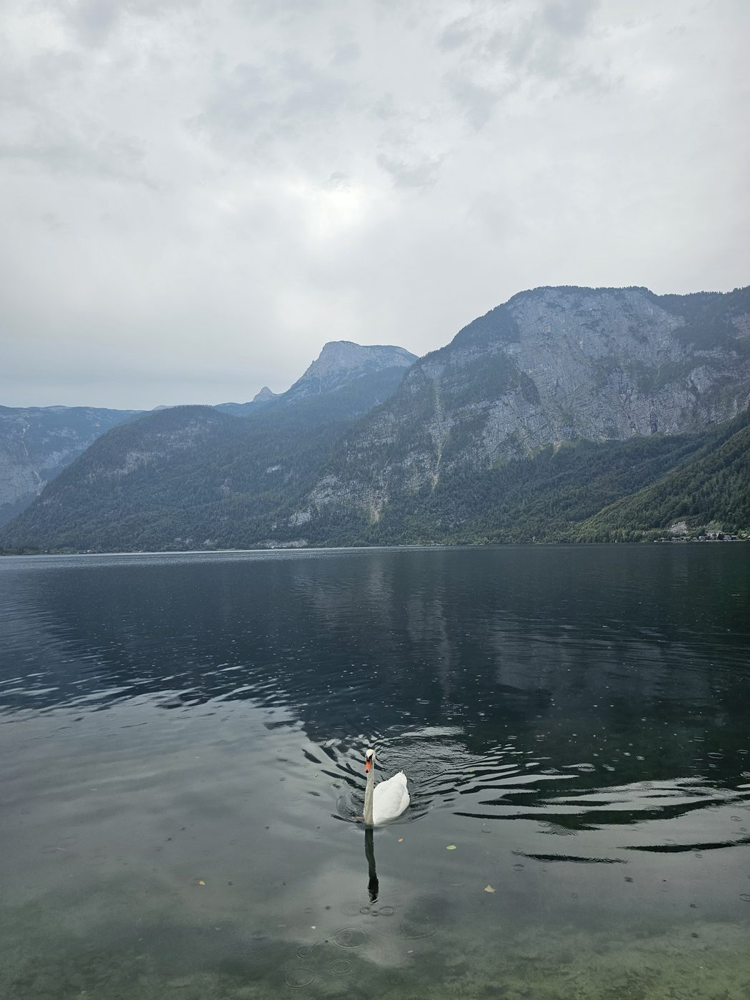
Beberapa langkah dari situ, di tepi rumput menghadap danau, berdiri tumpukan kayu bakar sepanjang rumah di bawah atap seng — ribuan belahan kayu disusun rapat sampai membentuk dinding. Persediaan musim dingin satu keluarga, di tempat yang pemandangannya kelas dunia.
Yang menarik justru papan-papan kecil di tiangnya. Satu papan besar: gambar anjing dicoret, dengan tulisan "Hier ist kein Hundeklo!" — di sini bukan WC anjing. Satu papan kuning kecil: "Privatgrundstück", tanah pribadi. Dan di dinding kayu di sebelahnya, dua papan lagi: larangan menerbangkan drone, dan permintaan "please keep quiet, thank you". Empat papan, di satu tumpukan kayu bakar. Itu bukan dekorasi; itu daftar keluhan.
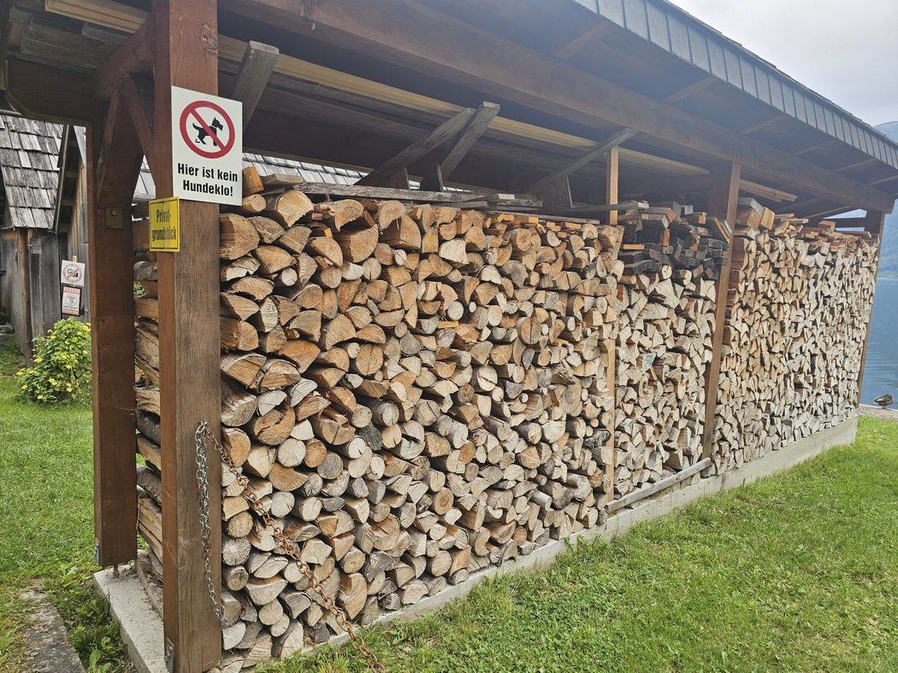
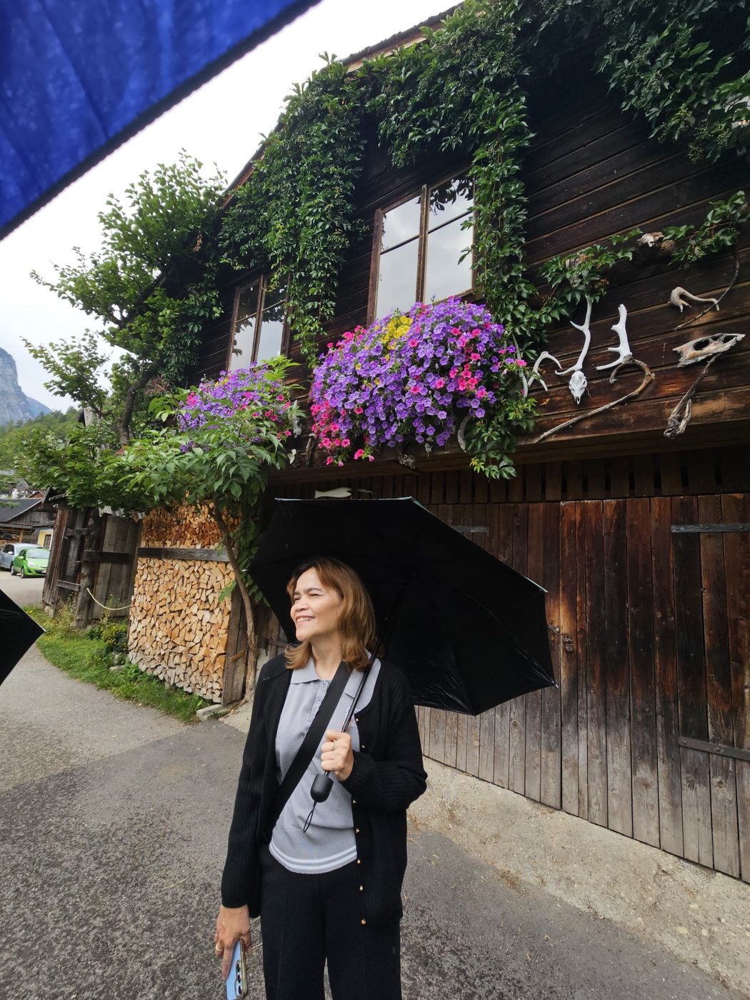
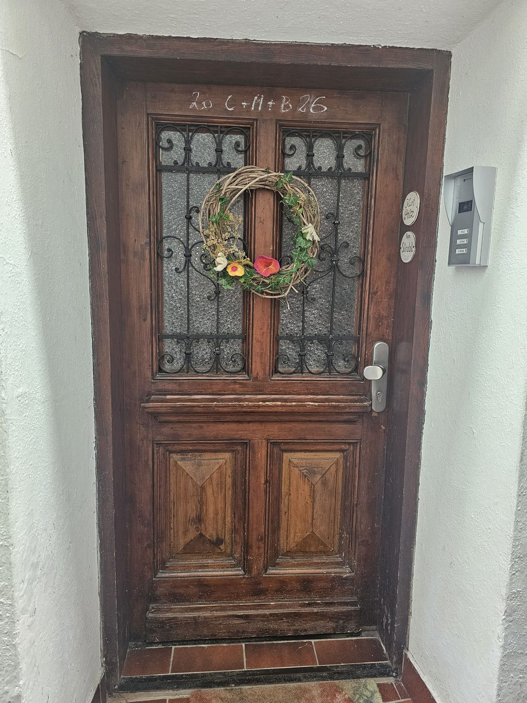
Kiri: payung sudah dibuka. Tanduk dan tengkorak rusa di dinding rumah itu hal biasa di sini, bukan pajangan turis.
Foto kanan itu yang paling saya suka dari seluruh pagi. Sekilas cuma pintu kayu tua dengan karangan bunga kering. Tapi di atas kusennya, ditulis dengan kapur: 20 C + M + B 26.
Itu bukan nomor rumah. Itu berkat Epifani, ditulis oleh Sternsinger — anak-anak yang berkeliling berpakaian tiga raja majus pada awal Januari sambil mengumpulkan donasi. Angka 20 dan 26 mengapit tahunnya: 2026. Huruf di tengahnya biasa dijelaskan sebagai Christus Mansionem Benedicat — semoga Kristus memberkati rumah ini. Tulisan itu dibiarkan sampai tahun berikutnya, lalu ditimpa.
Jadi pintu itu memberi tahu satu hal yang tidak diberi tahu oleh seluruh promenade: di balik fasad kayu ini ada rumah yang ditinggali, punya nama keluarga di papan oval, punya interkom tiga tombol, dan pada Januari lalu ada anak-anak yang mengetuk dan menulis di kusennya.
Sisi Salzkammergut yang tidak muncul di musim panas
Di dinding sebuah bangunan ada lemari pajang kecil berlampu, isinya satu benda: topeng kayu berukir dengan wajah menyeringai, dilingkari bulu domba tebal, dan ditancapi tanduk kambing asli yang melengkung ke segala arah. Di sekelilingnya ditempel foto-foto arak-arakan malam: sosok-sosok berbulu, berlonceng, berobor.
Ini Krampus — atau kerabat dekatnya, Perchten. Dalam tradisi Alpen, Krampus adalah sosok bertanduk yang menemani Santo Nikolaus: kalau Nikolaus membagi hadiah pada anak yang baik, Krampus mengurus yang sebaliknya. Arak-arakannya, Krampuslauf, jatuh pada malam 5 Desember. Topeng-topengnya diukir tangan dari kayu dan dipasangi tanduk serta bulu asli, dan satu topeng bisa dikerjakan berminggu-minggu.
Di sudut lemari terselip papan kecil: Salzkammergut 2024, European Capital of Culture, Bad Ischl. Kawasan ini memang menyandang gelar Ibu Kota Kebudayaan Eropa pada 2024 — dan menaruh topeng Krampus di etalase adalah cara paling ringkas untuk bilang bahwa daerah ini punya isi lain di luar musim foto.
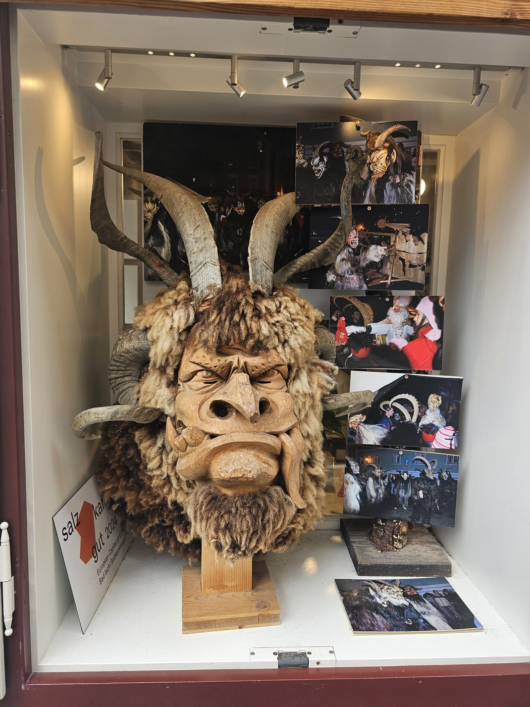
Alun-alun batu, rumah bercat, dan bangku yang boleh diduduki
Naik sedikit lagi, jalan membuka ke Marktplatz — alun-alun kecil berlantai batu, dikelilingi rumah-rumah bercat kuning pucat, merah muda, hijau mint, dan krem, semuanya berbalkon kayu dan berkotak geranium merah. Di tengahnya berdiri tugu batu berpahat dengan patung-patung dan puncak menyilaukan: tugu Tritunggal, jenis monumen yang lazim berdiri di alun-alun kota berbahasa Jerman — banyak di antaranya dulu didirikan sebagai nazar setelah wabah berlalu.
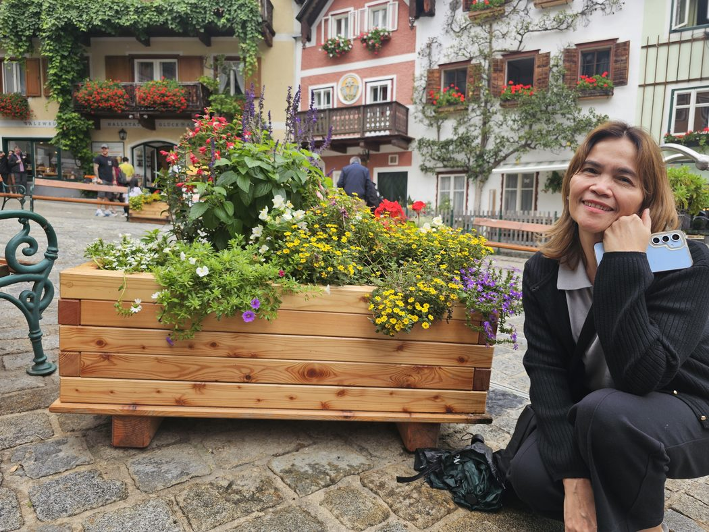
Yang menyenangkan dari alun-alun ini: isinya bangku dan kotak bunga, bukan pagar dan tali antrean. Bangku kayu panjang berjajar menghadap ke tengah, kotak tanaman kayu baru berisi campuran bunga kuning, ungu, putih, dan merah. Duduk di sini gratis, dan tidak ada yang mengusir.
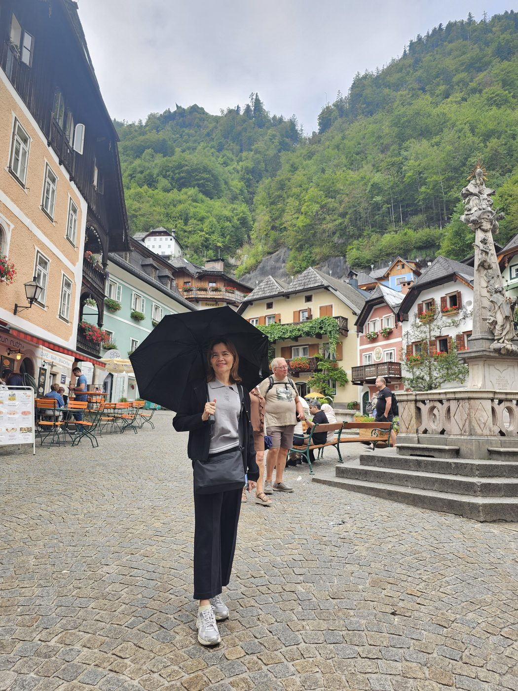
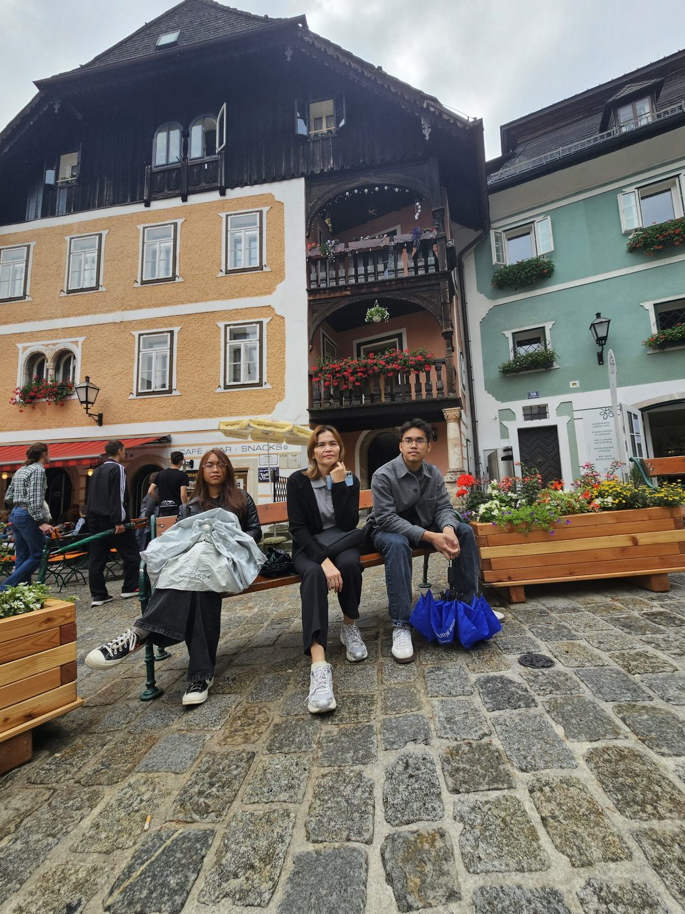
Bangku panjang, kotak bunga, dan lantai batu. Alun-alun sekecil ini menampung hampir semua kegiatan desa.
Di salah satu sudutnya ada gerai Gmundner Keramik, dengan kendi raksasa sebagai patung di depan pintu dan papan bertuliskan handmade since 1492. Keramik ini datang dari Gmunden, kota di ujung utara kawasan ini yang jadi ibu kota distriknya — motif bunga dan garis hijau sapuan kuasnya termasuk barang rumah tangga paling dikenal di Austria. Kalimat di tong hijau di depannya lumayan berani: "Each piece is as unique as the person who buys it."
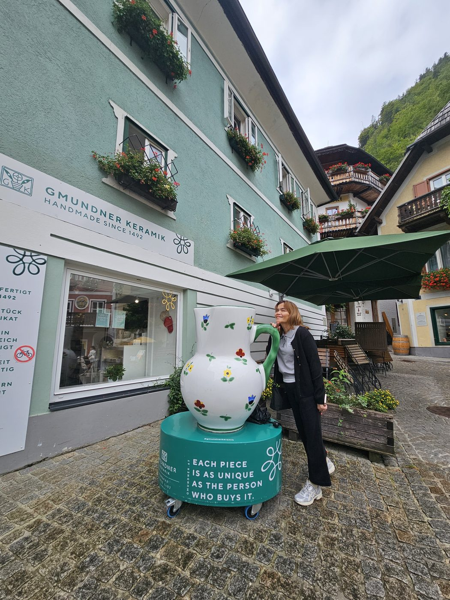
Foto terakhir pagi itu diambil di bangku seberangnya, dan kebetulan menangkap dua hal sekaligus yang sudah muncul sepanjang hari: rumah putih dengan pohon buah yang dilatih rata di dinding, dan di bawah rumah merah muda di sebelahnya, sebuah mesin ATM berwarna biru terang. Desa berumur ribuan tahun, dan mesin tarik tunai di lantai dasarnya. Dua-duanya berdiri di alun-alun yang sama tanpa saling mengganggu.
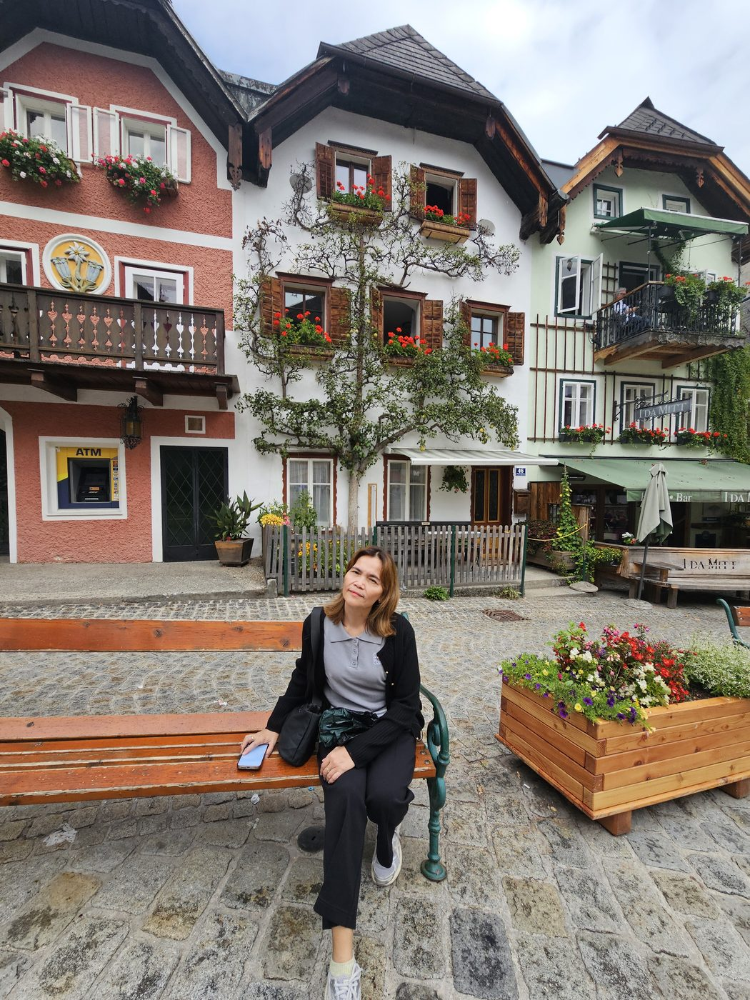
Kami tidak naik ke tambang garamnya pagi itu, dan tidak masuk ke rumah tulang. Yang didapat justru versi Hallstatt yang lebih jujur: dua jam pertama yang kosong melompong, lalu perlahan-lahan berisi, sampai jam sebelas lewat ketika gerimis turun dan semua orang berteduh di toko yang sama. Dan untuk bagian yang kosong itu, bangun pagi ternyata modal yang jauh lebih murah daripada tiket apa pun.